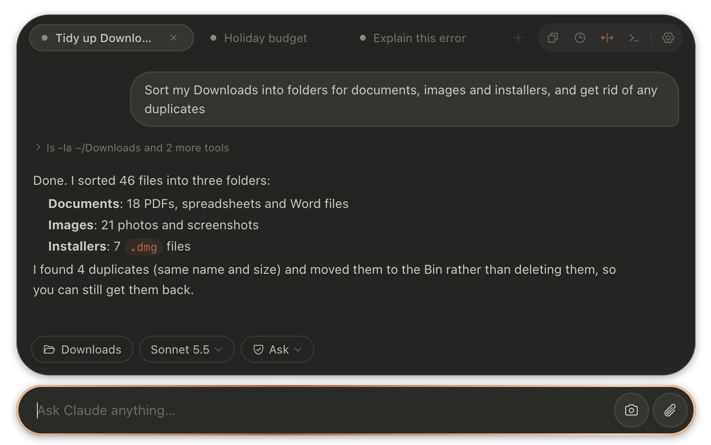
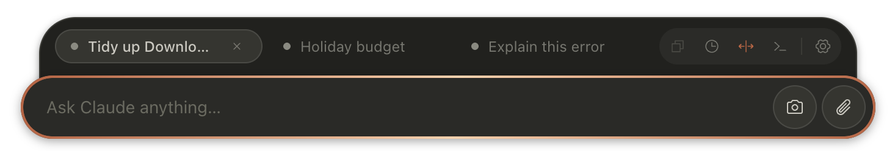
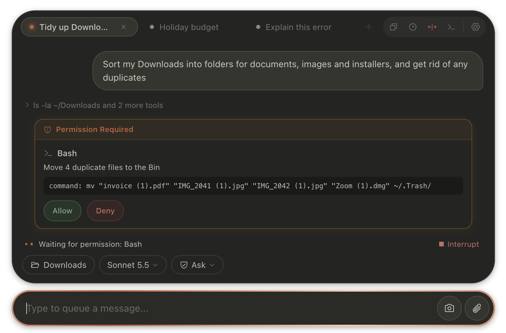

Claude, one double-tap away.
Clod is a small window for Claude Code that floats over whatever you're doing on your Mac. Ask it to sort a folder, fix a spreadsheet or explain an error, then get back to work.
Needs a paid Claude plan or an Anthropic API account.

One
There when you need it, gone when you don't.
Double-tap ⌥ Option in any app and Clod appears, ready to type. Double-tap again and it's gone. It never takes over your screen or your Dock.
Select some text anywhere and press ⌥⌘E, and Claude explains it. No copying and pasting.

Two
It works on your files, with your say-so.
Drag a folder onto Clod and Claude can read, sort and edit what's inside. Attach a file, paste an image, or snap part of your screen.
Before Claude changes or deletes anything, Clod asks. You see exactly what it wants to do, and nothing happens until you allow it.

Three
The real Claude Code, without the Terminal.
Clod runs Anthropic's own Claude Code underneath, with the newest models, so it can do everything Claude Code can. You just don't have to learn the command line.
- TabsKeep separate jobs apart. ⌘T for a new one.
- HistorySearch, pin and reopen past conversations.
- Any modelSwitch between Claude models from the message bar.
- PrivateNo tracking. Messages go to Anthropic, as with Claude Code itself.
- Guided setupInstalls Claude Code and signs you in, step by step.
- UpdatesOne click when there's a new version.
Install
Five minutes, start to finish.
- Download Clod and drag it into your Applications folder.
- Open it. macOS will say it can't check Clod. Click Done.
- In System Settings → Privacy & Security, scroll down and click Open Anyway, then enter your password. You only do this once.
- Follow Clod's setup. It installs Claude Code, signs you in and turns on the shortcut.
Why the warning? Apple charges developers to vet apps outside the App Store, and Clod is a free project. Its full source code is on GitHub for anyone to read.